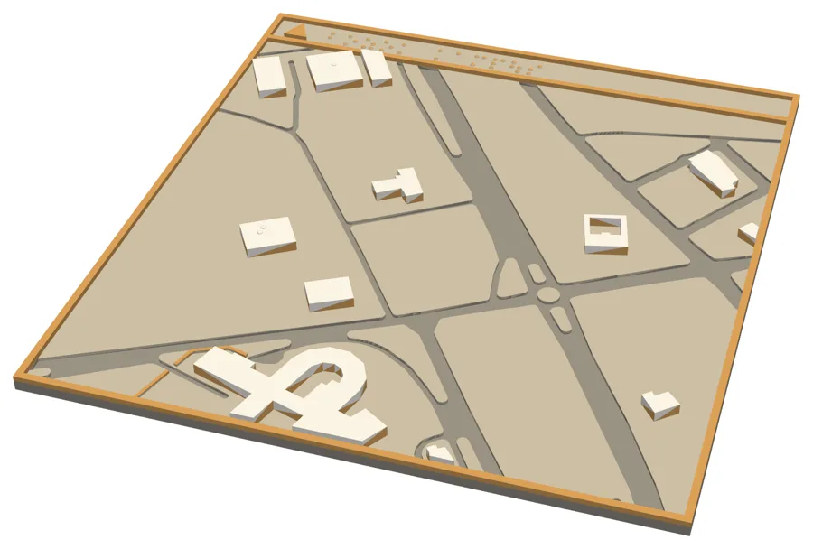

Dokunsal harita hazırla
Bir yerin adını yazın. Bina ve yolları OpenStreetMap’ten alıp 3D yazıcıda basılabilen, Türkçe Braille etiketli bir kabartma harita modeli hazırlayalım.
- Yeri seçin
- Ayarları belirleyin
- Modeli indirip basın

Harita bilgileri
Zorunlu olan yalnızca yer adıdır; diğer ayarların önerilen değerleri seçili gelir.
Önizleme ve sonuç
Henüz harita üretilmedi.
Önceki haritalar
Hazırlanan haritalar burada saklanır. Yeniden üretmeden açabilir, modelini indirebilir ya da silebilirsiniz.
| Harita | Tarih | Alan | Bina | İşlemler |
|---|
Proje hakkında
Dokun & Dinle, görme engelli bireylerin bir yeri gitmeden önce dokunarak tanıyabilmesi için kabartma harita hazırlar.
Haritada neler var?
| Öge | Dokunduğunuzda |
|---|---|
| Binalar | Plakadan 3 mm yükselen bloklar |
| Araç yolları | Plakaya oyulmuş 1 mm derinliğinde kanallar |
| Yaya yolları | 0,8 mm yüksekliğinde ince çizgiler |
| Başlık ve bina adları | Türkçe Braille; adlar a, b, c… anahtarlarıyla ayrı plakada |
| Kuzey yönü | Üst banttaki üçgen |
Sesli katman
Basılan haritanın belirli noktalarına bakır bant yerleştirilir. Bu noktalara dokunulduğunda o yerle ilgili sesli bilgi çalar. Bu katman web sitesinden bağımsız çalışır.
- Bakır bant: dokunmayı algılar
- ESP32: hangi noktaya dokunulduğunu belirler
- DFPlayer Mini ve hoparlör: ilgili ses kaydını çalar
Erişilebilirlik
Site ekran okuyucularla (NVDA, JAWS, VoiceOver, TalkBack) ve yalnızca klavyeyle kullanılabilecek şekilde hazırlanmıştır. Ekran okuyucusu olmayan kullanıcılar için isteğe bağlı sesli rehber ve Türkçe sesli komut bulunur.